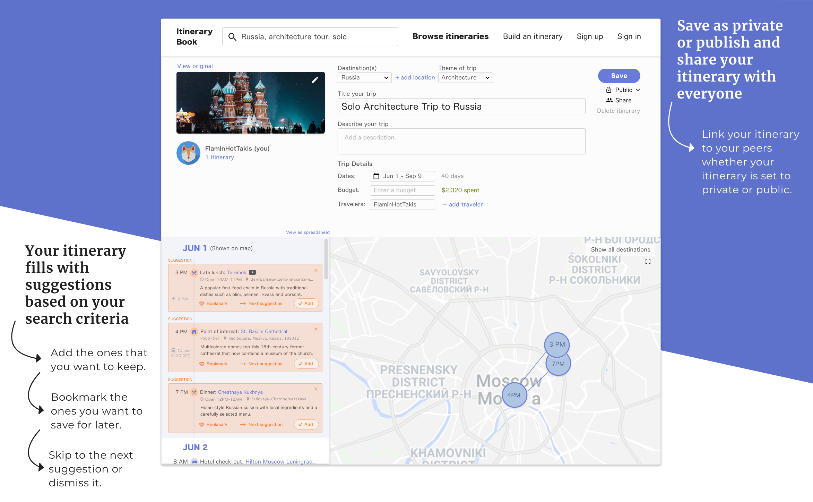
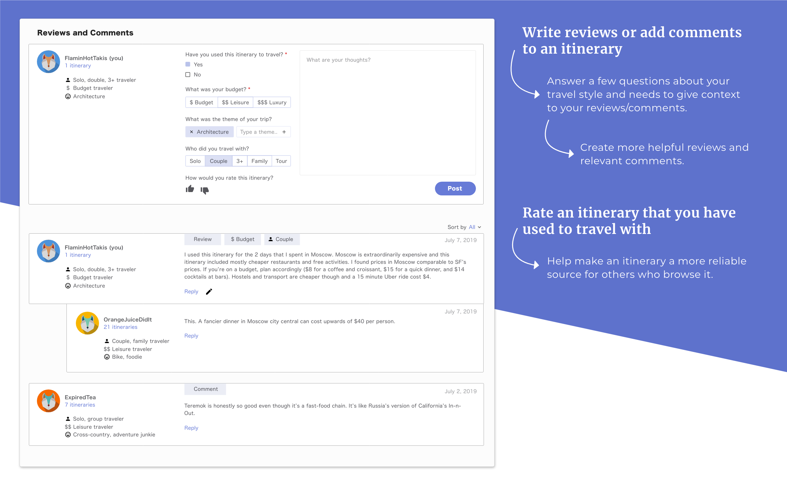

Itinerary Book
Case Study Personal project / Timeline: 3 months / My roles: Product ideation, UX research, UI design
It’s time consuming to plan a trip.
So, how do we shorten the planning phase?
A little backstory
It was only in 2018 did I attune myself to the expansive community of personal finance on Reddit. Prior to that, I had been signing up for retail credit cards to get those extra 25% off introductory discounts, not realizing that my credit score was tanking with every hard inquiry.
Within the following year, I bumped my score up by 100+ points and tidied up my small collection of credit cards. A new travel card held the highest stakes among all my others: it was the only one with an annual fee. I had to start traveling to earn back that fee. But, the more trips I went on, the more I noticed how planning for those trips felt like a timesink.
I wanted to learn the planning behaviors of all those who shared their itineraries on the web. In turn, I decided to try to consolidate their planning techniques and tools into one simple travel-planning workflow.
Planning is fun, but doesn’t have to be so time-consuming:
Within the 2 to 3 months of serious planning prior to taking the trip, consumers spend an average of 10 to 20 hours total planning for that trip. Consumers spend around 80% of their time planning their trips by visiting an average of 38 websites before booking, says Expedia. Less than 20% of the time is actually spent on booking.
The effort for planning a trip is spread out among booking flights, hotels, car rentals, choosing destinations and activities, budgeting, choosing the pace of travel, and many other factors.
I hypothesized that an itinerary share aggregation and discussion website in which users can view, reuse and share others’ itineraries would offload the number of hours spent on planning for their own trips.
User research
To understand how people plan their travels, I laid out the research effort as follows:
- Task 3 participants to plan a pseudo-trip and 2 participants to plan a pseudo-trip by revisiting a previous itinerary.
- Survey 30 participants to learn about their general mood and approach they have towards planning trips.
- I sought to academic papers surrounding travel and leisure behavior to help frame the survey questions I would ask.
The goal with the 5 participants was to see how they would map the task, identify their travel decision points, how they might cluster and organize those points, and which they choose to prioritize. I created a journey map based on the research:
The survey portion was divided into two sections: travel planning behavior and tools used for planning travel.
User research takeaways
Planning is enjoyable. Booking is stressful.
Travelers are bogged down by the details that go into planning. This is particularly with booking the most cost and time-efficient transportation methods— from airports to Airbnbs, from cities to cities, and from any small to big distance. As a result, people tend to either book the cheapest deals on locations that they had little or no prior interest in and with a budget that they don’t account for in their yearly spending, or they book higher prices for the cost of convenience.Length and pace of travel take precedence.
Themes of travel differed dramatically based on the personal travel goals and preferences. But nearly all trips were curated around the number of free days that they have for travel. The pace of travel was also determined by a combination of their age, physical needs, and themes of travel (i.e. bike tour, guided tour, business trip).Buying and sharing an experience is to craft a better self.
All participants processed and shared their travels in various ways: posting on Instagram or Facebook, journaling their day logs and budgets, or offering travel suggestions to their friends. There’s a possible motivation behind it. A study revealed that post-travel was the most memorable part of travel, as participants would share their post-travel experiences “in great detail, reflecting and furthering the notion of existential authenticity as central to the travel experience.” Travel experiences that were more authentic to the participant would manifest a feeling of exclusiveness and personal meaning. And they are willing to spend money to create these experiences.This notion of buying experiences is not unfounded. Brian Chesky, CEO of Airbnb, shared research that “three in four millennials said they’d rather buy an experience than a physical good.” (Recode, 2018) And in May 2018, TripAdvisor rebranded their Viator and Activities to “TripAdvisor Experiences and Rentals.” People buy and share experiences as one of the many ways to build identity capital, which is a repertoire of our individual assets that make us uniquely ourselves.
Market research takeaways
I looked into the resources that the participants mentioned they used for planning their trips. I categorized the different mediums of content and highlighted what they were being used for.
- Travel reviews are too abundant and text-heavy. Free-for-all travel forums have no effective way of filtering out unhelpful, irrelevant, and/or misleading reviews.
- With forums such as Reddit or Facebook travel groups, users sift through a number of posts when considering one activity or one location.
- Public itineraries are hard to search for through top travel sites like TripAdvisor.
- Top travel sites like TripAdvisor and Expedia are seen as companies that offer clickbait travel packages and sponsored material that don’t feel authentic.
- Instagram and Facebook posts will inspire travel, but not specifically to the same travel destinations.
- Cluttered UI with too many image-heavy suggestions discouraged users to click through to view these suggestions.
I refined my hypothesis by giving consideration to these gaps:
- Curate a smaller set of travel suggestions that are based on the user’s unique travel criteria.
- Add a social media element, such as a comments section, to allow users to discuss, rate, and share.
- Guide users through writing reviews so they can contribute with more helpful reviews.
- Fewer images and suggestions to reduce cognitive load.
Crazy 8's
Putting a spin on the Crazy 8's ideation method, I brainstormed ideas to address each of the user research takeaways and market gaps mentioned above, and then plotted the ideas onto a storyboard.
The 8 quotes in the image below are based on a culmination of the user feedback taken during the initial user research and market research phase. Each drawing presents a potential method of addressing the use case or pain point expressed in its corresponding quote.
I hashed out the concepts from the crazy 8's exercise and sketched them out as interactions that I reordered into a storyboard.

I shared these with designers to ideate and flesh out the interactions further. From the feedback, I made the final user flow for the website design.

Proof of concept
For proof of concept, I made an interactive prototype using Adobe XD and tasked 2 of the previous participants and 1 new participant with the following UXR test plan:
- Short interview questions were split into three main themes: travel planning behavior, informed planning, and spontaneous planning.
- Prototype test was divided into 3 sequential tasks to observe the participant’s approach to creating and/or browsing itineraries.
- Reflection questions aimed to reinforce the participants’ general perspective towards itinerary sharing and building, as well as their possible intentions for using a product like this.

Evaluation & findings
I arranged the data from the test plan into behavioral, empirical and design pain points. The top 3 pain points evident from the data were:
- Privacy: 80% of the participants would rather save their itineraries as private than to publish it publicly. All participants wanted to share their travels via social media platforms, some publicly and others privately.
- Referencing the itinerary: Participants would refer to the itinerary before and during their travels, but only 20% said they would refer back to it after their trip has concluded.
- Mobility: All participants would prefer a mobile app.
- Pain points in the usability: All of the participants skimmed through the itinerary page or didn’t read through the entire page.

Based on the user feedback, I realized a need to pivot the original value of the design based on these 2 points:
Reframing #1: Build an itinerary first, browse later.
I initially framed the website to have a primary focus of being an itinerary sharing platform. But based on this user research, the participants were ultimately more interested in creating their own itinerary based on their individual needs and preferences; publishing their itinerary and viewing other itineraries were supplementary and secondary steps.
Additionally, the participants emphasized the appeal of discussing, rating, and sharing the itineraries among both peers and strangers using the site. This collaboration would make the itinerary site feel more engaging, active, and trustworthy.
With the technical feasibility, enough users of this website would have to create public itineraries in order for the itinerary sharing feature to generate value.
Reframing #2: Planning really is fun, so we don't have to cut it short.
The most stressful part for the participants was actually putting money down and booking. The planning prior to booking was actually a positive experience; participants felt that having a vacation to look forward to motivated them to work harder in the workplace and even in their personal relationships. This changed the course of the outcome goals to, more specifically, cut down the time on the more negative experiences within the travel planning process: booking.
Design
Describe your ideal trip, add in the number of free days you have, and then choose either of these two options:
(A) Borrow an itinerary and start traveling
(B) Generate a new itinerary



